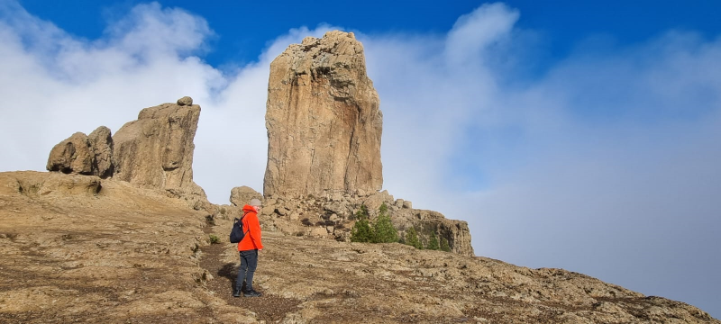
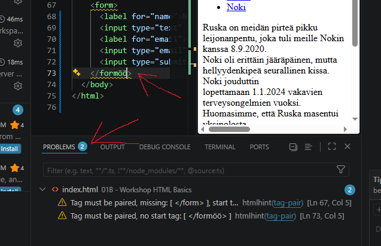

Moikkuu, ja tervetuloa seuraamaan Juhanin nettisivujen
harjoitteluprojektia
Noniin noniin. Laitetaampa seuraavaksi KUVA paikalleeensa.
Kuva on otettu Gran Canarialla Rogue Nublolla, joka on yksi saaren
korkeimmista vuorista.

Harjoitellaan linkkien laittamista suoraan unordered listiin.
Ruska on meidän pirteä pikku leijonanpentu, joka tuli meille Nokin kanssa
8.9.2020.
Noki oli erittäin jääräpäinen, mutta hellyydenkipeä seurallinen kissa.
Noki jouduttin
lopettamaan 1.1.2024 vakavien terveysongelmien vuoksi. Huomasimme, että
Ruska masentui yksinolosta.
Tämän vuoksi päätimme hakea uuden kissan 30.12.24, joka on Havu.
Havu on erittäin leikkisä ja utelias kissa, joka on tuonut paljon iloa
elämäämme.
Tiedättehän, me kissaihmiset kerrotaan aina meidän kissoista. Saa nähdä
teenkö projektina "Purringbrothers" kanavalle nettisivut.
| Noki | Ruska | Havu |
|---|---|---|
| 8.9.2020 | 8.9.2020 | 30.12.2024 |
Halusin vielä todistaa käyttäneeni W3C validatoria ;)
